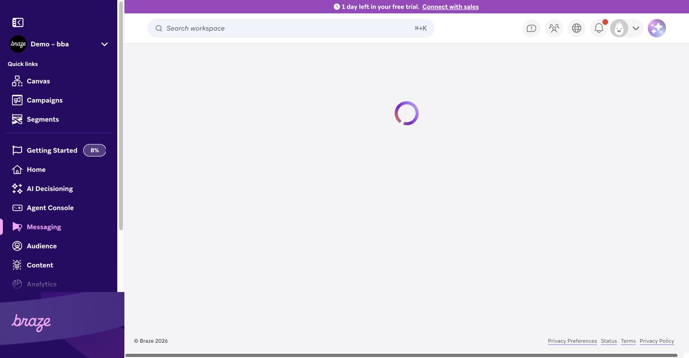
CAMPAIGNS FIDELITY AUDIT · 2026.10.29 — 10.30
逐页对照 Braze，保留差异证据。
当前仍未达到 1:1 复刻。以下保存原始截图与同名页面结构快照，点击图片查看原尺寸。每个主题下可以展开具体差异；账号数据、浏览器翻译与不同视口不计作产品缺陷。
79差异条目 · 全部待处理
101原始截图 + 同名 DOM
49 / 30P1 / P2 · 复刻验收优先级
3 + 1加载记录 / 试用门槛记录
Braze 原版
本地复刻
本主题没有单独截图；请结合相关差异条目的对照证据。
Braze 原版
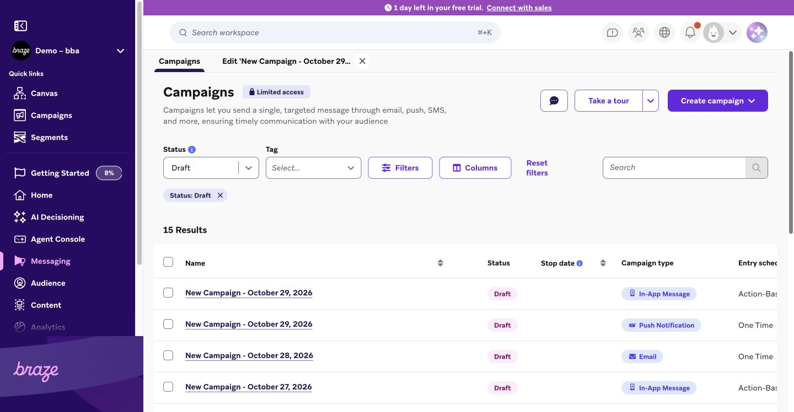
本地复刻
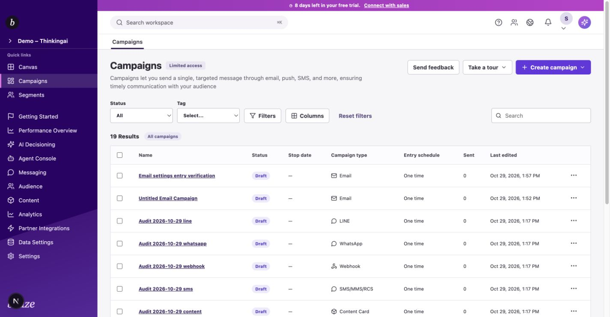
P2 CMP-001 · Campaigns 全局布局仍不一致
原版：侧栏约 260px，带插画和徽标的渠道菜单，独立的列表工具栏、卡片间距及表头样式。
本地：侧栏约 228px，渠道图标、字体、按钮尺寸、卡片边距、行高和搜索位置均不同。
入口：Campaigns → 列表与 Create campaign
P1 CMP-002 · 状态筛选缺少 Archived 和 Idle
原版：Status 包含 All、Active、Draft、Archived、Stopped、Idle。
本地：仅 All、Draft、Active、Stopped。
入口：Campaigns → Status
P2 CMP-005 · 表格排序能力不完整
原版：Name、Stop date、Sent、Teams、Last edited 使用可访问的排序按钮。
本地：UI 主要只有 Name 排序；其余列没有对应操作，Name 也未使用同等语义按钮。
入口：Campaigns → 点击列标题
P2 CMP-006 · 搜索与筛选标签交互不同
原版：搜索框带 Search 提交按钮；筛选条件用各自可关闭的标签展示。
本地：输入即时筛选，条件以汇总文字展示，缺少逐条关闭的标签。
入口：Campaigns → Search / 应用筛选
P2 CMP-007 · 分页缺少 96 行和页码导航
原版：每页 12/24/48/96 行，支持页码。
本地：每页 12/24/48 行，仅上一页、下一页。
入口：Campaigns → 列表底部
P1 CMP-008 · Copy to workspace 弹窗未复刻
原版：行菜单有 Copy to workspace，进入选择目标工作区的两步弹窗。
本地：行菜单没有该入口。
入口：Campaigns → More Actions → Copy to workspace
P1 CMP-009 · 批量操作缺少 Archive
原版：选中行后有 Archive 和 Tag as。
本地：选中行后只有批量打标签。
入口：Campaigns → 勾选活动
P1 CMP-010 · 列表缺少 Priority Sorter 快捷入口
原版：Campaigns 列表有 Priority Sorter 入口。
本地：列表没有入口；本地在 IAM Schedule → View exact priority 已有优先级弹窗，不能记为整个功能不存在。
入口：Campaigns → 列表底部；本地 IAM → Schedule
Braze 原版
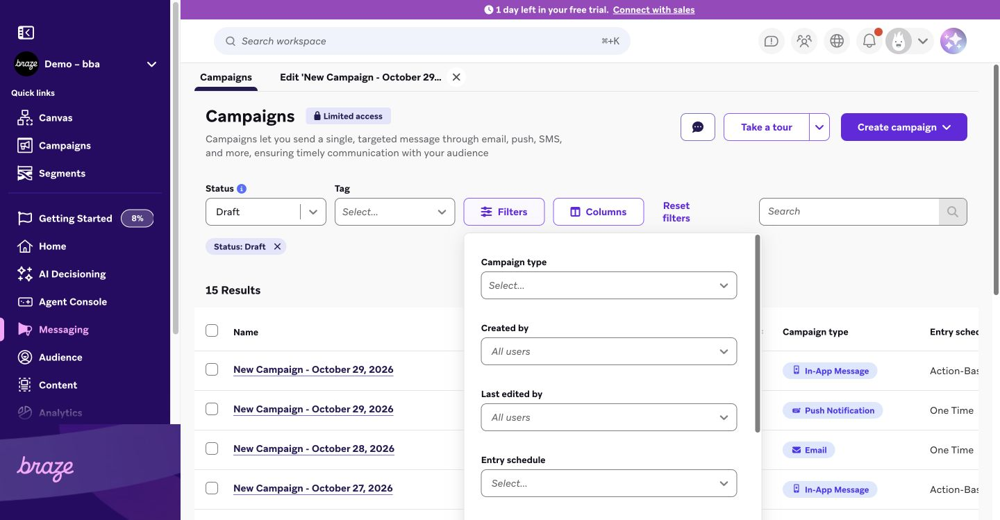
本地复刻
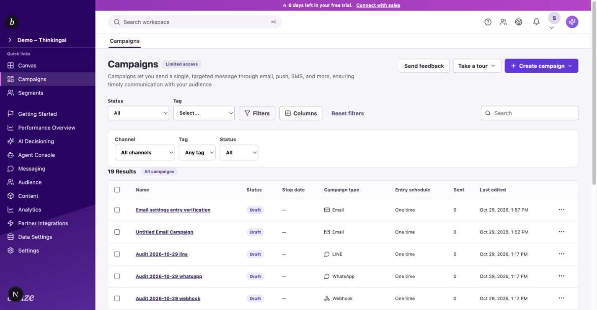
P1 CMP-003 · 高级筛选目录大量缺失
原版：Filters 提供活动类型、创建者、编辑者、入组计划、日期、过期交互数据、受众复杂度、BrazeAI 优化、目标分群等。
本地：面板只有 Channel、Tag、Status。
入口：Campaigns → Filters
P2 CMP-006 · 搜索与筛选标签交互不同
原版：搜索框带 Search 提交按钮；筛选条件用各自可关闭的标签展示。
本地：输入即时筛选，条件以汇总文字展示，缺少逐条关闭的标签。
入口：Campaigns → Search / 应用筛选
Braze 原版
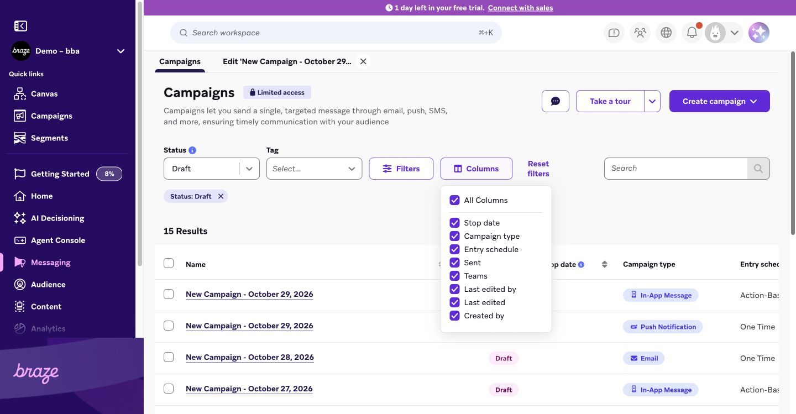
本地复刻
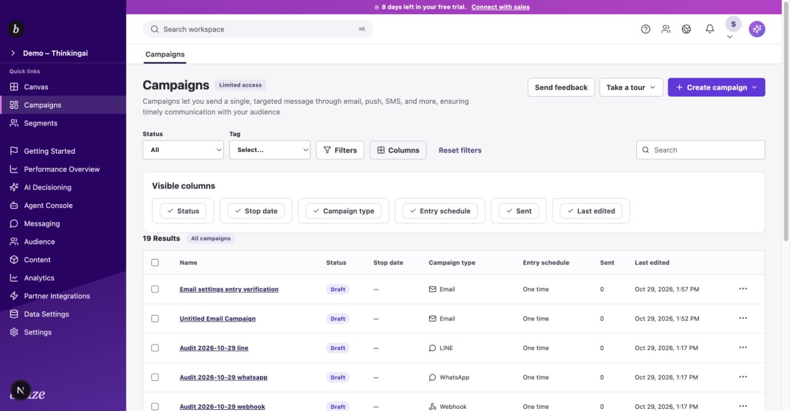
P1 CMP-004 · Columns 缺少管理列及全选
原版：有 All Columns、Teams、Last edited by、Created by 等选项。
本地：只有 6 个列开关，没有这 3 个管理列和 All Columns。
入口：Campaigns → Columns
Braze 原版
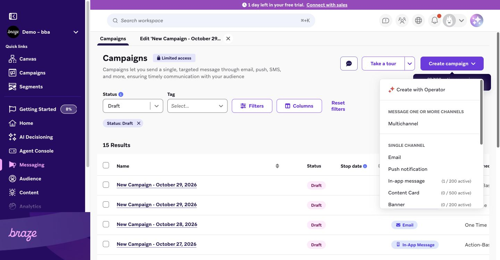
本地复刻
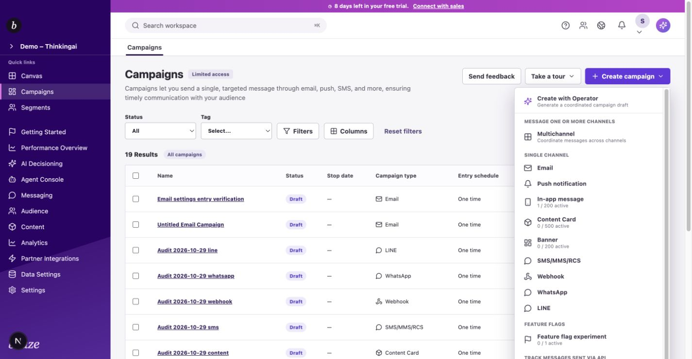
P2 CMP-001 · Campaigns 全局布局仍不一致
原版：侧栏约 260px，带插画和徽标的渠道菜单，独立的列表工具栏、卡片间距及表头样式。
本地：侧栏约 228px，渠道图标、字体、按钮尺寸、卡片边距、行高和搜索位置均不同。
入口：Campaigns → 列表与 Create campaign
P2 CMP-012 · Create campaign 菜单底部被视口裁切
原版：菜单中的 API campaign 可完整展示并点击。
本地：741px 高视口中 API campaign 位于约 y=740–773，鼠标不可正常点击；聚焦后 Enter 可进入，处理函数本身存在。
入口：Campaigns → Create campaign → 菜单底部
本地复刻
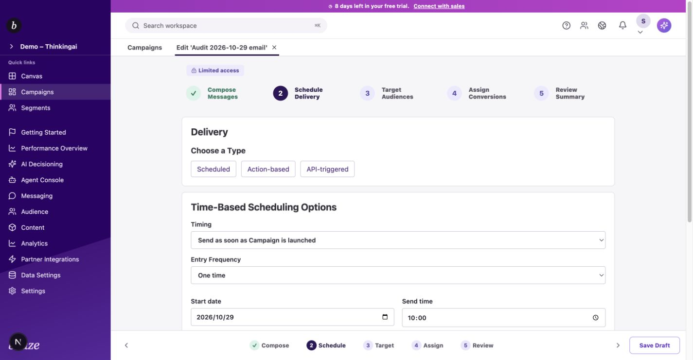
P2 CMP-017 · 发送类型与 Timing 控件未按原版呈现
原版：Scheduled / Action-Based / API-Triggered 是带描述的卡片；Timing 使用单选行及帮助入口。
本地：发送类型是普通按钮，Timing 是原生下拉，缺少相同的卡片说明层级。
入口：普通渠道 → Schedule Delivery
P1 CMP-018 · 默认立即发送与条件字段、Review 不一致
原版：选择立即发送时，表单和摘要应一致表达立即发送。
本地：未设置 delivery.timing 的草稿中，下拉显示立即发送，却仍展示日期/频率；Review 显示 designated times 和 No upcoming messages scheduled。
入口：打开 Audit email → Schedule，不更改 Timing → Review
P1 CMP-019 · Intelligent Timing 专属设置缺失
原版：有 quiet hours、热门时段或自定义 fallback、投递时间预览及适用条件说明。
本地：选择 intelligent 后仍复用普通日期/时间字段，没有 fallback 和投递时间预览。
入口：普通渠道 → Schedule → Intelligent Timing
P1 CMP-020 · Action-Based 触发器目录大幅简化
原版：本账号当前目录包含常规事件、资料更新、电商、入站 SMS/WhatsApp/LINE、位置等共 22 项。
本地：公共发送计划只提供 Start Session、Perform Custom Event、Make Purchase、Interact With Campaign 四项。IAM 使用独立组件，不能据此判定 IAM 同样只有四项。
入口：普通渠道 → Action-Based → 触发器目录
P1 CMP-021 · Action-Based 的延迟与活动周期结构未对齐
原版：Schedule Delay 下拉、开始日期和时间、公司时区、可选结束时间、摘要分别展示。
本地：公共组件只有 Delay(minutes)、Start date 和通用结束字段，缺少相同的周期配置层级及摘要。
入口：普通渠道 → Schedule → Action-Based
P1 CMP-022 · API-Triggered 缺少请求示例与标识操作
原版：展示 Campaign ID、Copy 和 API/cURL 示例说明。
本地：公共发送计划只显示 campaigns.trigger 权限提示和通用控制项。
入口：普通渠道 → Schedule → API-Triggered
P2 CMP-023 · 重新入组间隔单位未对齐
原版：间隔值与时间单位可分别设置。
本地：公共发送计划固定为天数数字输入，未提供同等单位选择。
入口：普通渠道 → Delivery Controls → Re-eligibility
P2 CMP-024 · Frequency Capping 展示与管理入口未对齐
原版：显示频控状态和管理频控的链接。
本地：公共组件以 Workspace delivery policies 汇总展示，没有同等的频控管理入口。
入口：普通渠道 → Schedule → Delivery Controls
Braze 原版
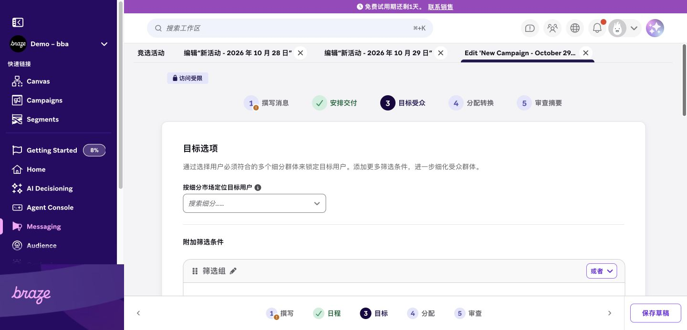
本地复刻
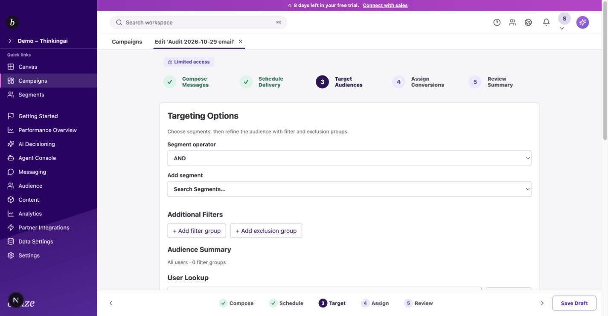
P2 CMP-025 · 分群选择器未复刻搜索与多选呈现
原版：使用可搜索的分群选择器，选中项在控件内展示。
本地：原生 Add segment 下拉加独立 Segment operator，控件与已选项的呈现不同。
入口：Target Audiences → Target Users By Segment
P2 CMP-027 · User Lookup 弹窗被替换为行内输入
原版：打开独立 User Lookup 弹窗，搜索 External User ID 或 Braze ID。
本地：常显一个 Email or external ID 输入和 Lookup User 按钮，入口、标识范围和结果承载方式未对齐。
入口：Target Audiences → Lookup User
P1 CMP-028 · A/B Testing 缺少 Optimize with BrazeAI
原版：有优化开关，并提示至少两个变体及 Compose messages 快捷入口。
本地：仅手动分配变体与控制组，没有 AI 优化入口。
入口：Target Audiences → A/B Testing
P2 CMP-029 · Suppression Lists 独立区块未复刻
原版：展示已应用名单或无名单状态，并链接到 Suppression Lists。
本地：只有 Workspace delivery policies 中的 suppression 条数，没有同等名单区块和管理入口。
入口：Target Audiences → Suppression Lists
P1 CMP-030 · Total Population 缺少队列、刷新与细分统计
原版：有精确人数、占比、计算时间、刷新、Calculation Queue 弹窗、渠道 breakdown 和可展开 LTV。
本地：受众编辑页只有 reachable/matched/workspace/GCG 汇总；Review 虽有基础 breakdown，仍缺少队列、计算历史与 LTV 等。
入口：Target Audiences → Total Population → View calculation queue / Show Additional Statistics
本地复刻
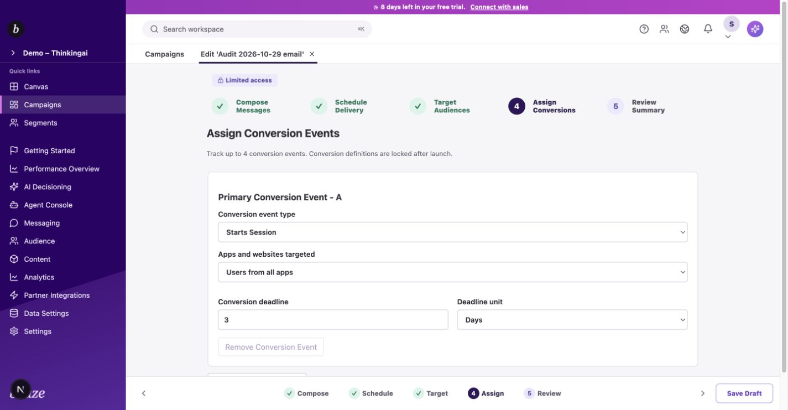
P1 CMP-031 · Conversion event 类型目录不一致
原版：本次可见 9 类：自定义事件、会话、升级应用，以及查看产品/更新购物车/开始结账/下单/取消订单/退款订单。
本地：本地为会话、购买、自定义事件、打开邮件、点击邮件；缺少升级与对应电商类型，并增加原账号当前目录未列出的邮件类型。
入口：Assign Conversions → Conversion event type
P1 CMP-032 · 旧草稿的转化编辑页和 Review 显示不同事件
原版：同一活动的事件类型在编辑与摘要之间应一致。
本地：无 config.conversionEvents、旧字段为 Make Purchase 的草稿，编辑页默认 Starts Session，Review 却为 Made Purchase。
入口：Audit email → Assign Conversions → Review，不修改事件
P2 CMP-033 · 转化配置的字段层级与说明不足
原版：窄列选择器、事件说明、应用范围、截止时间及计算摘要分层呈现。
本地：宽表单字段，缺少同等说明和截止时间摘要。
入口：Assign Conversions
Braze 原版
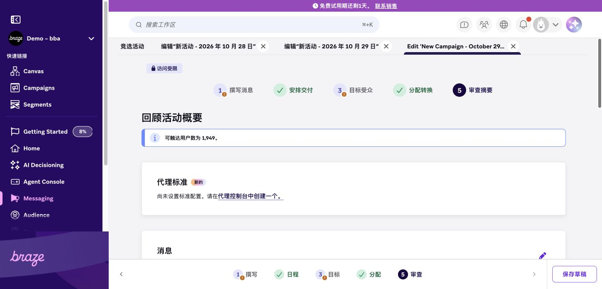
本地复刻
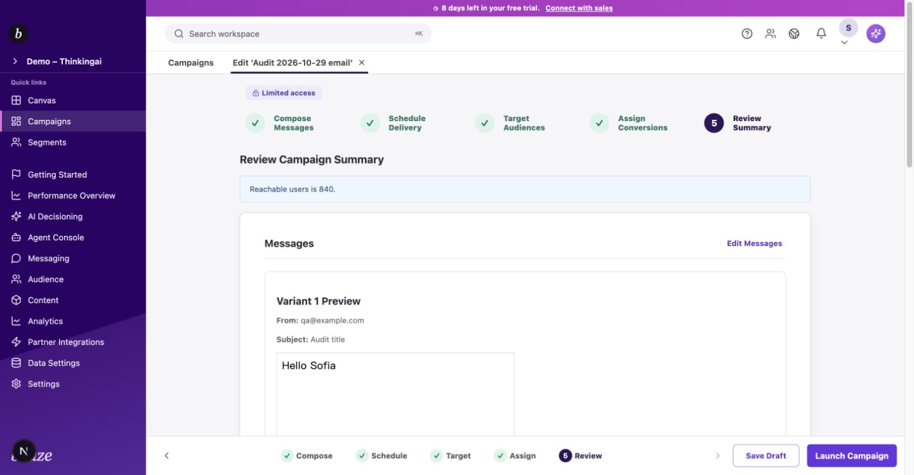
P1 CMP-016 · 步骤打勾只依赖导航位置
原版：未完成的先前步骤保留警告状态，完成状态由校验决定。
本地：只要进入后续步骤，所有前面的步骤都显示 ✓；并不能代表内容有效。
入口：打开未完整配置的草稿 → 直接进入 Review
P1 CMP-018 · 默认立即发送与条件字段、Review 不一致
原版：选择立即发送时，表单和摘要应一致表达立即发送。
本地：未设置 delivery.timing 的草稿中，下拉显示立即发送，却仍展示日期/频率；Review 显示 designated times 和 No upcoming messages scheduled。
入口：打开 Audit email → Schedule，不更改 Timing → Review
P1 CMP-030 · Total Population 缺少队列、刷新与细分统计
原版：有精确人数、占比、计算时间、刷新、Calculation Queue 弹窗、渠道 breakdown 和可展开 LTV。
本地：受众编辑页只有 reachable/matched/workspace/GCG 汇总；Review 虽有基础 breakdown，仍缺少队列、计算历史与 LTV 等。
入口：Target Audiences → Total Population → View calculation queue / Show Additional Statistics
P1 CMP-032 · 旧草稿的转化编辑页和 Review 显示不同事件
原版：同一活动的事件类型在编辑与摘要之间应一致。
本地：无 config.conversionEvents、旧字段为 Make Purchase 的草稿，编辑页默认 Starts Session，Review 却为 Made Purchase。
入口：Audit email → Assign Conversions → Review，不修改事件
P1 CMP-034 · Review 缺少 Agentic Standards
原版：摘要页有 Agentic Standards 评估区域；本账号显示未配置 standards 及 Agent Console 入口。
本地：没有该区域及对应状态。
入口：Review Summary → Agentic Standards
P2 CMP-035 · Review 卡片、编辑入口及统计呈现未对齐
原版：原版的信息层级、卡片边距、图标编辑入口及人口统计布局有明确结构。
本地：为简化的平铺卡片与文字编辑按钮，统计表内容和布局也不同。
入口：Review Summary
P2 CMP-036 · Limited access 下的 Launch 按钮状态不同
原版：本次原版账号处于 Limited access，摘要页仅显示 Save Draft。
本地：本地同样标记 Limited access，但摘要出现可点击 Launch Campaign。未点击，不能据此判断真实权限或发送行为。
入口：Review Summary → 页面底部
Braze 原版
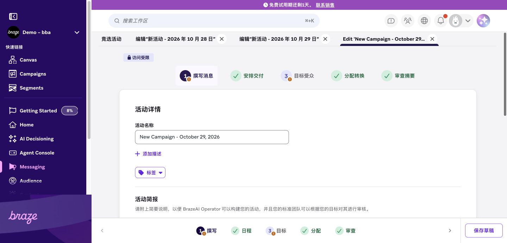
本地复刻
本主题没有单独截图；请结合相关差异条目的对照证据。
P1 CMP-013 · Campaign brief 上传区缺失
原版：新活动详情有可选 brief 上传，支持 PDF/TXT/MD/CSV/DOCX，15MB。
本地：公共详情卡只有名称、Teams、标签和 ID，没有 brief 区。
入口：Create campaign → Compose → Campaign Details
P2 CMP-014 · Campaign ID 的形式及用途未对齐
原版：展示独立的公共 UUID 和 Copy。
本地：普通活动显示 cmp_* 内部标识；API Campaign 另有一个可编辑 ID 输入。
入口：Compose → Campaign ID / API campaign
Braze 原版
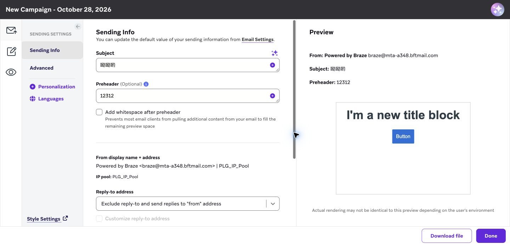
本地复刻
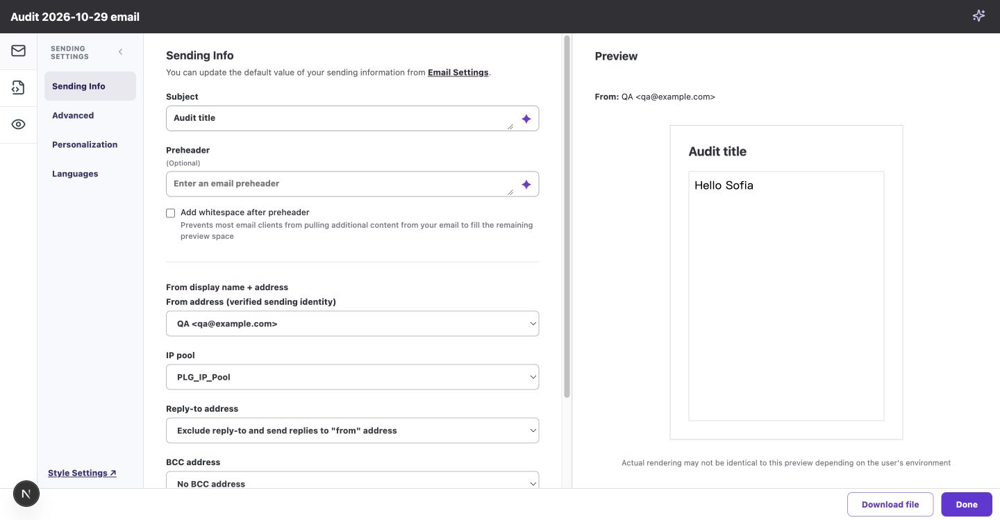
P2 CMP-037 · 发送设置页结构和尺寸仍不一致
原版：全屏图标栏、左导航、中间设置表单、右侧预览，字段与间距按原版组织。
本地：发送设置已存在，但栏宽、导航文字、图标、字段行距、Preheader 换行和保存/退出位置不同。
入口：Email → Sending Settings / Sending Info
P2 CMP-038 · 发送身份、IP Pool 和 Reply-to 控件未对齐
原版：本账号身份/IP Pool 只读，并显示受限的 Customize Reply-to 控件。
本地：本地可编辑身份/IP Pool，缺少同位置的 Customize Reply-to 选择项。权限原因需用同等账号能力再核实。
入口：Email → Sending Info
P2 CMP-039 · Subject / Preheader 未复刻 Liquid 代码字段
原版：代码式输入带 Add Liquid 和 AI 辅助入口。
本地：普通 textarea 和不同的插入工具，编辑器样式、入口位置及交互不同。
入口：Email → Sending Info → Subject / Preheader
Braze 原版
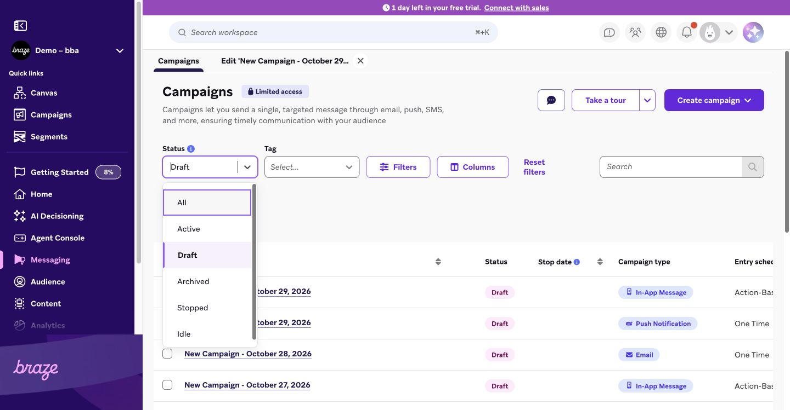
本地复刻
本主题没有单独截图；请结合相关差异条目的对照证据。
P1 CMP-002 · 状态筛选缺少 Archived 和 Idle
原版：Status 包含 All、Active、Draft、Archived、Stopped、Idle。
本地：仅 All、Draft、Active、Stopped。
入口：Campaigns → Status
本地复刻
本主题没有单独截图；请结合相关差异条目的对照证据。
P1 CMP-008 · Copy to workspace 弹窗未复刻
原版：行菜单有 Copy to workspace，进入选择目标工作区的两步弹窗。
本地：行菜单没有该入口。
入口：Campaigns → More Actions → Copy to workspace
Braze 原版
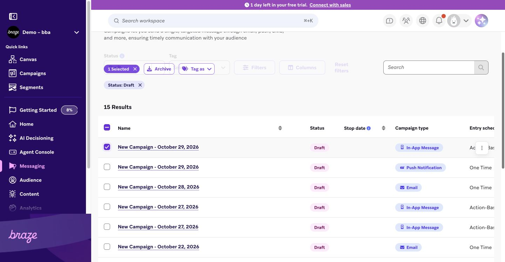
本地复刻
本主题没有单独截图；请结合相关差异条目的对照证据。
P1 CMP-009 · 批量操作缺少 Archive
原版：选中行后有 Archive 和 Tag as。
本地：选中行后只有批量打标签。
入口：Campaigns → 勾选活动
Braze 原版
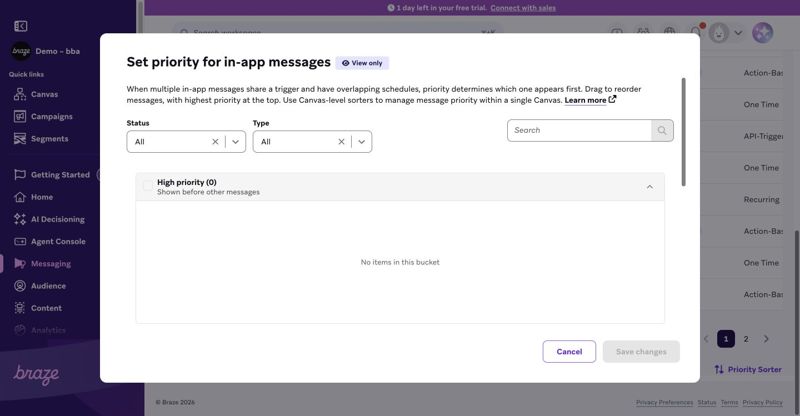
本地复刻
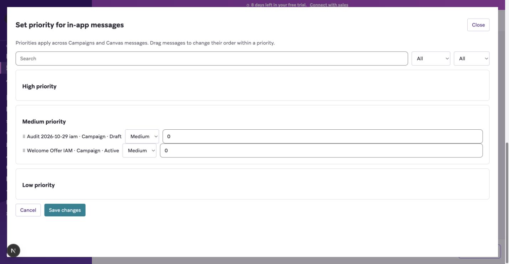
P1 CMP-010 · 列表缺少 Priority Sorter 快捷入口
原版：Campaigns 列表有 Priority Sorter 入口。
本地：列表没有入口；本地在 IAM Schedule → View exact priority 已有优先级弹窗，不能记为整个功能不存在。
入口：Campaigns → 列表底部；本地 IAM → Schedule
P2 CMP-011 · 优先级弹窗结构未对齐
原版：三档带计数、折叠、复选、多选操作、上下移动按钮、消息链接；本账号显示 View only。
本地：三块普通分组、每行优先级下拉和数字顺序输入；缺少折叠、计数、复选与同等行操作。
入口：Priority Sorter；本地 IAM → Schedule → View exact priority
Braze 原版
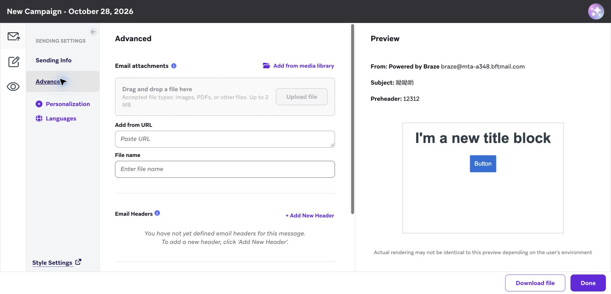
本地复刻
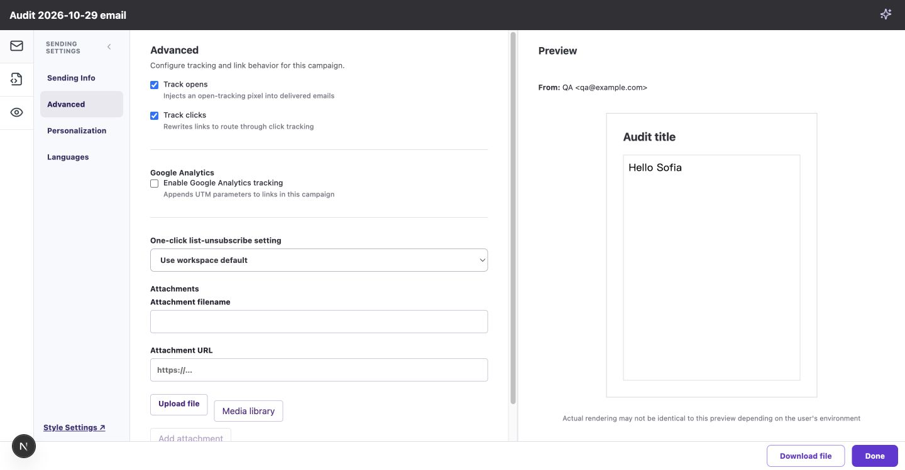
P1 CMP-040 · Advanced 缺少 Headers 与 Extras 编辑区
原版：高级设置有附件、Headers 和 Extras 区域。
本地：高级设置没有 Headers/Extras；加入了不同位置的打开/点击追踪、UTM 等控件。
入口：Email → Sending Settings → Advanced
P2 CMP-041 · 邮件附件上传流程未完整复刻
原版：拖放上传、2MB 提示、媒体库以及 URL/文件名配置分层展示。
本地：基本附件输入存在，但拖放区、说明、媒体选择与表单布局不同。
入口：Email → Advanced → Attachments
Braze 原版
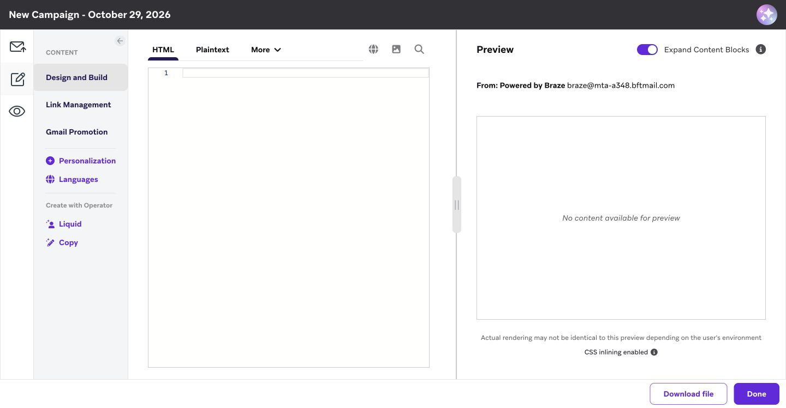
本地复刻
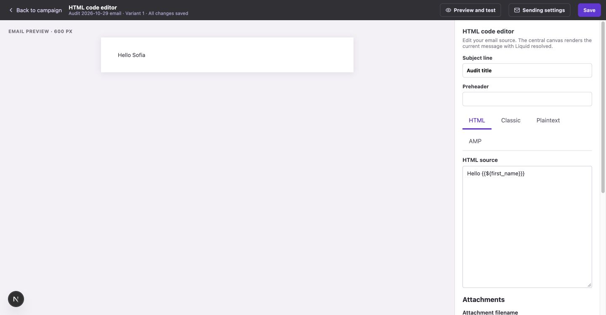
P1 CMP-042 · HTML 编辑页三栏布局未复刻
原版：左功能导航、中间代码编辑器、右预览，带行号和代码工具。
本地：主要是左侧大预览和右侧窄代码区，HTML/Classic/Plaintext/AMP 等标签及顶栏行为与原版不同。
入口：Email → HTML code editor
P1 CMP-043 · HTML 编辑页缺少同等代码工具和状态
原版：可见代码搜索、Add images、Expand Content Blocks、CSS Inlining 状态、Download / Done。
本地：未提供同等工具组合及状态呈现；保存与完成流程也不同。
入口：Email → HTML code editor → 工具栏与底栏
P1 CMP-044 · Gmail Promotion 配置页未复刻
原版：有公司 Logo、Subject、Image、Discount Offer、Deal Card、Promotion Cards 与生成 HTML head 的配置。
本地：HTML 编辑体验没有对应完整配置页。
入口：Email HTML editor → Gmail Promotion
Braze 原版
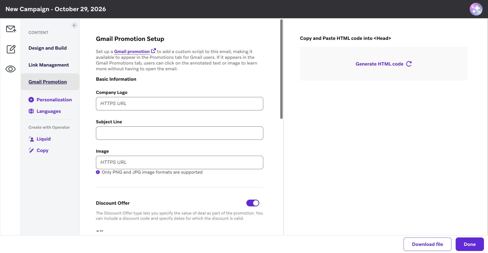
本地复刻
本主题没有单独截图；请结合相关差异条目的对照证据。
P1 CMP-044 · Gmail Promotion 配置页未复刻
原版：有公司 Logo、Subject、Image、Discount Offer、Deal Card、Promotion Cards 与生成 HTML head 的配置。
本地：HTML 编辑体验没有对应完整配置页。
入口：Email HTML editor → Gmail Promotion
Braze 原版
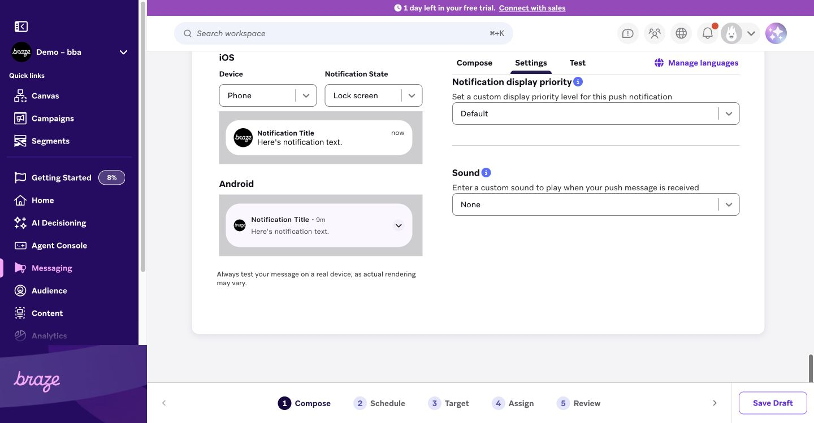
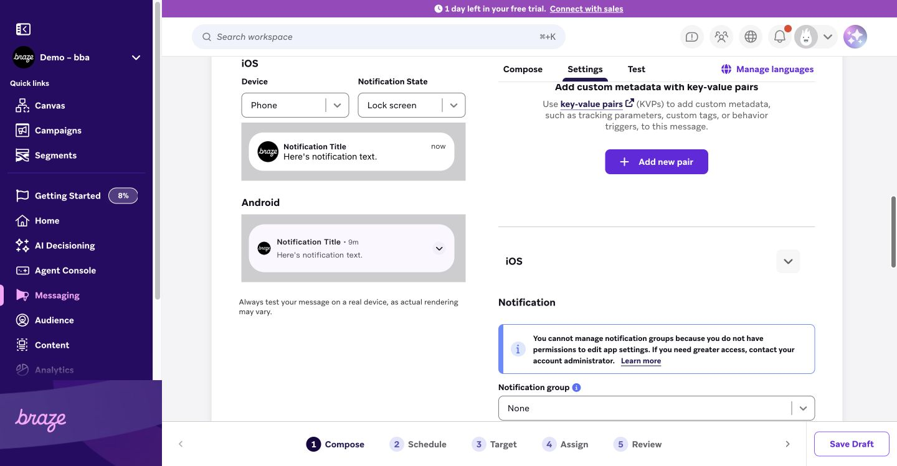
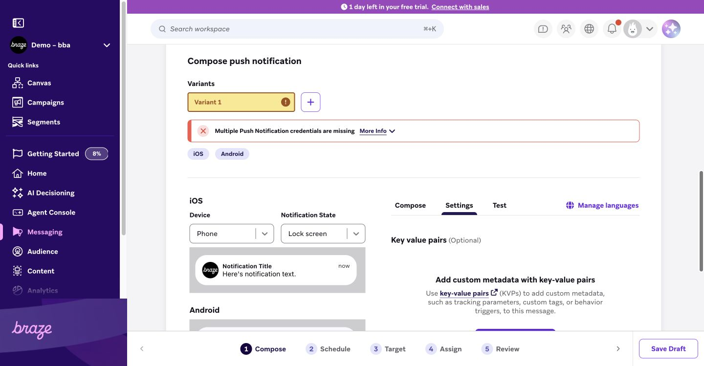
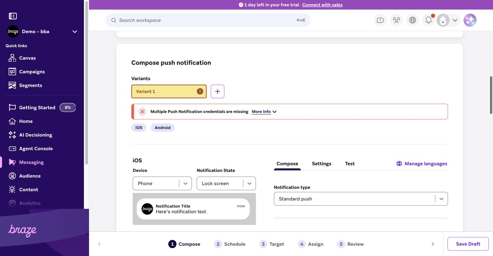
本地复刻
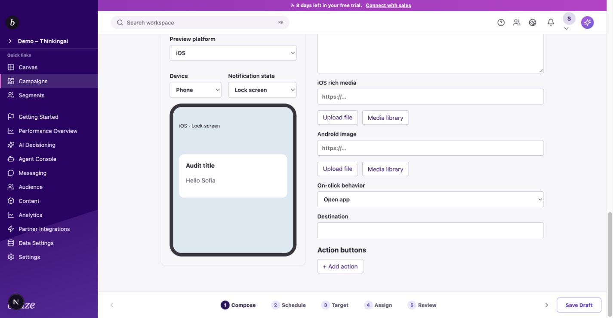
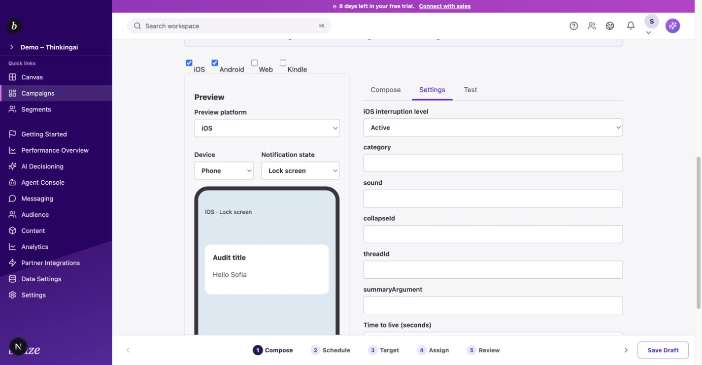
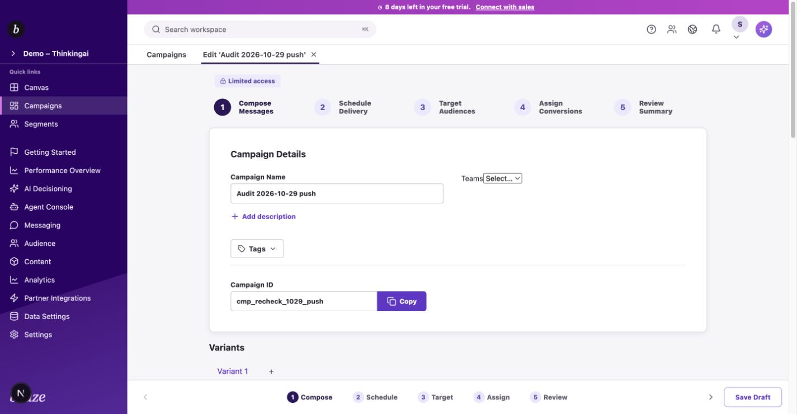
P1 CMP-013 · Campaign brief 上传区缺失
原版：新活动详情有可选 brief 上传，支持 PDF/TXT/MD/CSV/DOCX，15MB。
本地：公共详情卡只有名称、Teams、标签和 ID，没有 brief 区。
入口：Create campaign → Compose → Campaign Details
P2 CMP-014 · Campaign ID 的形式及用途未对齐
原版：展示独立的公共 UUID 和 Copy。
本地：普通活动显示 cmp_* 内部标识；API Campaign 另有一个可编辑 ID 输入。
入口：Compose → Campaign ID / API campaign
P2 CMP-015 · Variant 工具和校验状态不同
原版：变体以带状态颜色、警告图标的标签展示，新增及管理操作集中。
本地：普通渠道附加常显的名称输入、Copy、Delete；标签样式和校验标记未对齐。
入口：Compose → Variants
P2 CMP-046 · 多平台预览和消息编辑布局不同
原版：可同时查看 iOS 与 Android 预览，带平台预览状态，Compose/Settings/Test 与 Manage languages 独立。
本地：通过 Preview platform 切换单个预览；语言配置常显在表单中，平台选择、预览与编辑区域结构不同。
入口：Push → Compose
P1 CMP-047 · iOS 高级设置不完整
原版：有 Notification group、Alert options、content-available、mutable-content、可选 badge、Relevance Score、Expiration 等。
本地：仅 interruption level、category/sound/collapseId/threadId/summaryArgument、TTL、badge、Silent push，缺少上述独立控件。
入口：Push → Settings → iOS
P1 CMP-048 · Android Notification 设置未复刻
原版：有通知频道、Custom notification channel、Category、Visibility、TTL 单位、Notification ID、App icon color、Display priority、Sound。
本地：Settings 是一套通用/iOS 为主的字段，没有对应 Android 设置区与管理权限提示。
入口：Push → Settings → Android
Braze 原版
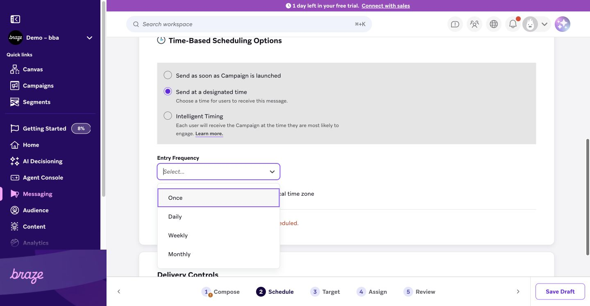
本地复刻
本主题没有单独截图；请结合相关差异条目的对照证据。
P2 CMP-017 · 发送类型与 Timing 控件未按原版呈现
原版：Scheduled / Action-Based / API-Triggered 是带描述的卡片；Timing 使用单选行及帮助入口。
本地：发送类型是普通按钮，Timing 是原生下拉，缺少相同的卡片说明层级。
入口：普通渠道 → Schedule Delivery
Braze 原版
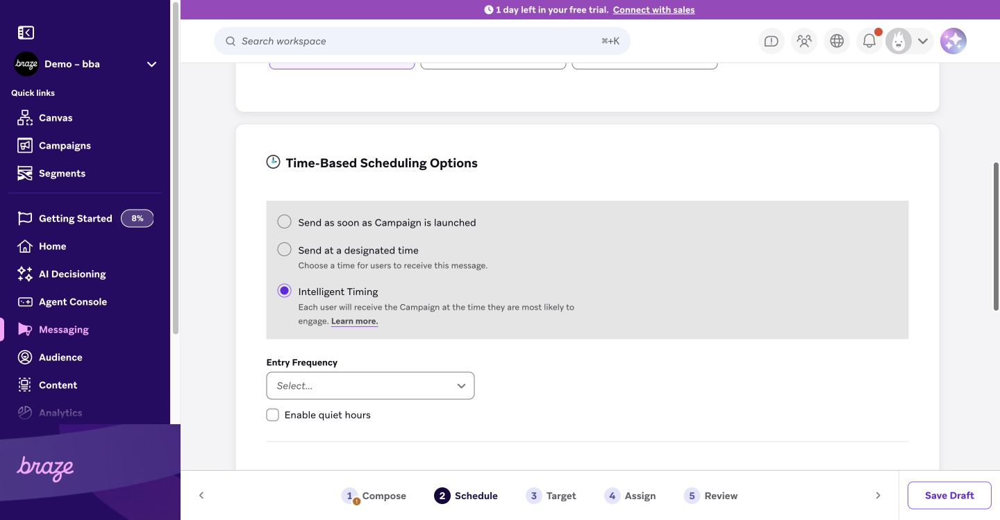
本地复刻
本主题没有单独截图；请结合相关差异条目的对照证据。
P1 CMP-019 · Intelligent Timing 专属设置缺失
原版：有 quiet hours、热门时段或自定义 fallback、投递时间预览及适用条件说明。
本地：选择 intelligent 后仍复用普通日期/时间字段，没有 fallback 和投递时间预览。
入口：普通渠道 → Schedule → Intelligent Timing
本地复刻
本主题没有单独截图；请结合相关差异条目的对照证据。
P1 CMP-020 · Action-Based 触发器目录大幅简化
原版：本账号当前目录包含常规事件、资料更新、电商、入站 SMS/WhatsApp/LINE、位置等共 22 项。
本地：公共发送计划只提供 Start Session、Perform Custom Event、Make Purchase、Interact With Campaign 四项。IAM 使用独立组件，不能据此判定 IAM 同样只有四项。
入口：普通渠道 → Action-Based → 触发器目录
P1 CMP-021 · Action-Based 的延迟与活动周期结构未对齐
原版：Schedule Delay 下拉、开始日期和时间、公司时区、可选结束时间、摘要分别展示。
本地：公共组件只有 Delay(minutes)、Start date 和通用结束字段，缺少相同的周期配置层级及摘要。
入口：普通渠道 → Schedule → Action-Based
Braze 原版
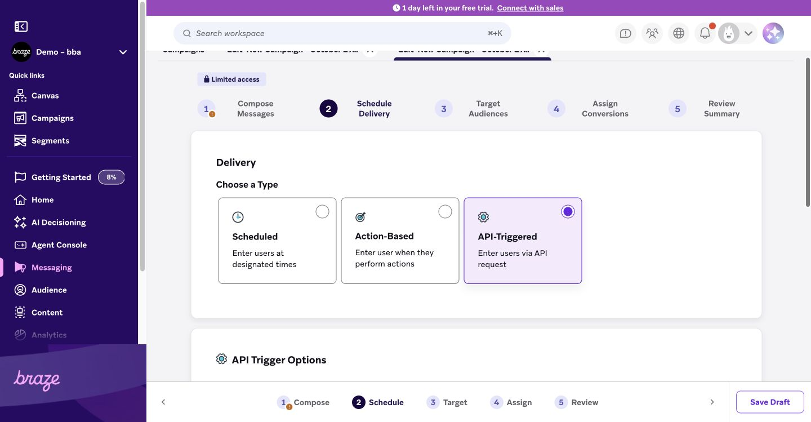
本地复刻
本主题没有单独截图；请结合相关差异条目的对照证据。
P1 CMP-022 · API-Triggered 缺少请求示例与标识操作
原版：展示 Campaign ID、Copy 和 API/cURL 示例说明。
本地：公共发送计划只显示 campaigns.trigger 权限提示和通用控制项。
入口：普通渠道 → Schedule → API-Triggered
Braze 原版
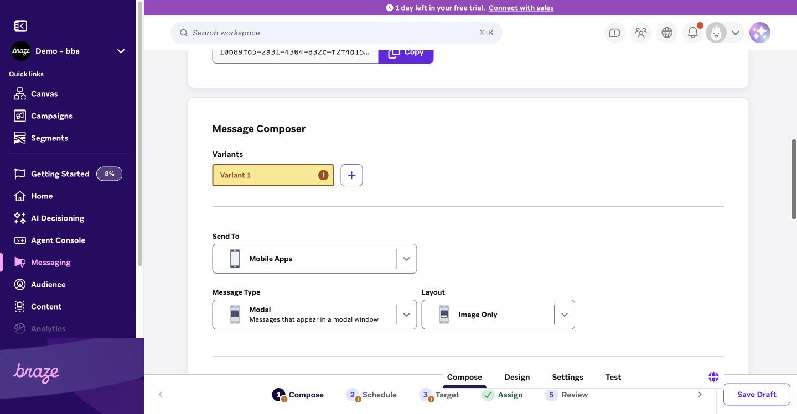
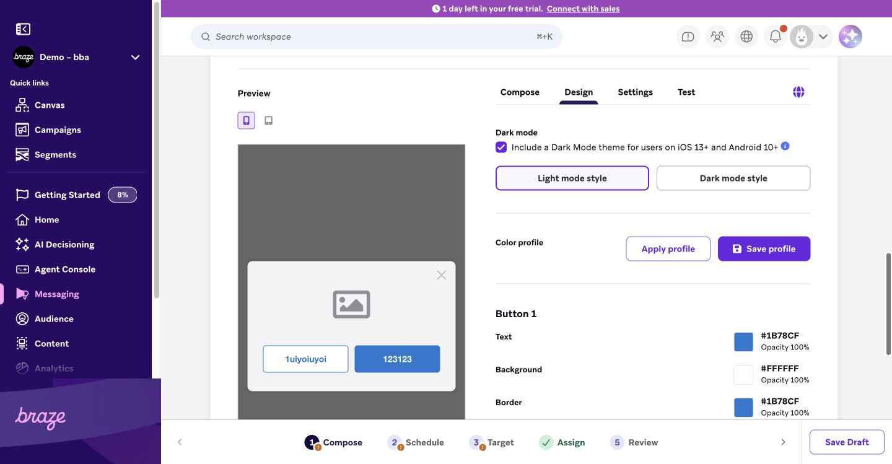
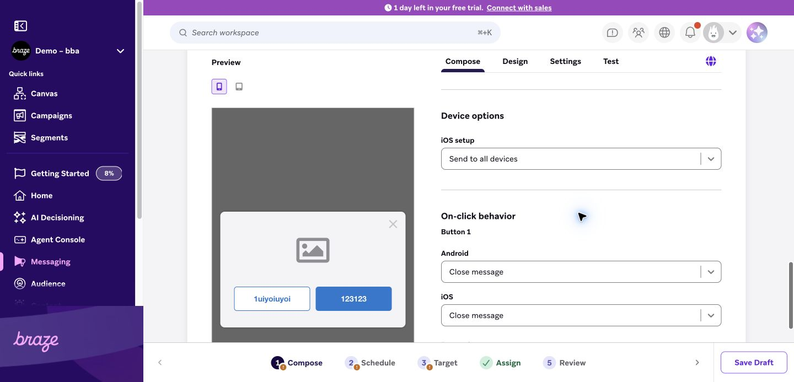
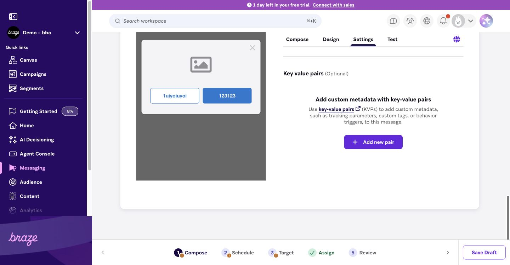
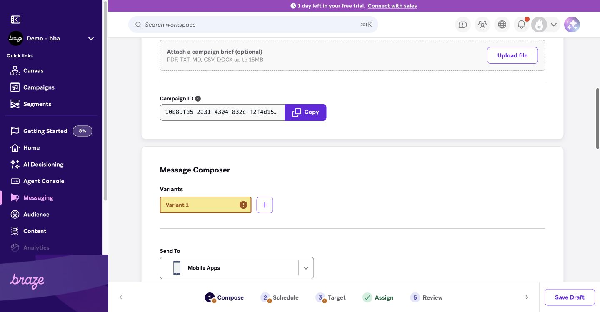
P1 CMP-049 · 传统编辑器未支持按钮的 Android / iOS 独立行为
原版：每个按钮分别配置 Android 和 iOS 的点击行为。
本地：每个按钮只有一个统一的 on-click behavior。
入口：IAM → Traditional → Compose → On-click behavior
P1 CMP-050 · 传统编辑器缺少 Light/Dark mode 样式切换
原版：Design 有 Dark mode 启用及 Light mode style / Dark mode style，支持分别编辑。
本地：Design 有颜色及 Color profile，但没有同等模式切换。
入口：IAM → Traditional → Design
P2 CMP-051 · 传统 Settings 的 Accessibility 与 KVP 结构不同
原版：Accessibility 与 KVP 在一个 Settings 页面顺序展示。
本地：拆为 Key-value pairs / Accessibility 二级页签，控件和预览尺寸不同；两项均已存在。
入口：IAM → Traditional → Settings
P1 CMP-052 · Banner 创建入口缺少原版的分阶段选择
原版：先选 Placement，再选 Drag-and-drop / HTML / Templates 卡片，进入全屏编辑器。
本地：Placement 字段已存在，但未选择时即显示完整行内 builder；以原生模式及模板下拉代替选择卡片。
入口：Create campaign → Banner → 编辑体验
P1 CMP-053 · Banner 积木目录不完整
原版：Title、Paragraph、Button、Image、Link、Spacer、Custom Code、Phone Capture、Email Capture、Manage Subscriptions。
本地：只有 Title/Text/Image/Button/HTML/Spacer，缺少 Link 及三种采集/订阅积木。
入口：Banner → Drag-and-drop builder → Blocks
P1 CMP-054 · Banner 全屏编辑工具未完整复刻
原版：有 Style、设备切换、Canvas Size、Outlines、Personalization、Manage Languages、Copywriter 和 Cancel/Done。
本地：行内 Rows/Blocks/属性面板，没有同等全屏结构及工具集合。Undo/Redo 已存在。
入口：Banner → builder
P2 CMP-055 · Content Card 缺少原版设备预览和页签结构
原版：设备预览选择、Compose/Settings/Test、Language 与语言管理入口。
本地：预览为固定卡片，页签是 Compose/Settings/Card controls；没有同等设备选择与语言区域。Card controls 生命周期功能已存在。
入口：Content Card → Compose
P1 CMP-056 · Content Card 点击行为未按平台分开
原版：行为按平台配置，当前默认 None；Pin 在 Compose。
本地：统一点击行为且默认 Open web URL；Pin 移入 Settings。
入口：Content Card → Compose → On-click behavior
P1 CMP-057 · Content Card Settings 缺少 Accessibility
原版：有辅助功能语言、Liquid 语言入口及 KVP。
本地：只有 Category、Pin、click tracking、KVP，没有辅助功能语言设置。
入口：Content Card → Settings
P2 CMP-058 · 消息类型与 Contact Card 的能力门槛未对齐
原版：当前订阅组权限下，Contact Card 显示 MMS 能力限制与说明，不能进入可用编辑状态。
本地：本地直接提供 SMS/MMS/RCS 和 vCard 编辑字段。原版真实 MMS/RCS 编辑器因账号能力受限未验证。
入口：SMS → Contact Card / 类型选择
P2 CMP-059 · SMS 预览、语言和字段工具不同
原版：左侧消息气泡预览，Liquid/AI 字段及语言入口按原版组织。
本地：手机外框预览、普通消息输入、额外 Sending number/opt-out 字段，语言和工具位置不同。
入口：SMS → Compose
P1 CMP-060 · Webhook 缺少原版初始模板选择页
原版：初始 Compose 有模板卡片和 Choose New Template 入口。
本地：直接进入请求表单，只有 Templates 按钮和简化的模板管理。
入口：Create campaign → Webhook
P1 CMP-061 · Credential 管理入口未复刻
原版：有受管理的 Credential 下拉；当前账号无可用凭据时禁用。
本地：只有 None / Bearer / Basic 等快速认证字段，缺少同等受管理凭据选择。
入口：Webhook → Compose → Authentication
P2 CMP-062 · Webhook 请求预览及 Liquid 字段布局不同
原版：左侧请求预览、右侧 Compose/Test、Manage languages 与代码式 URL/Body/KVP 输入。
本地：堆叠的长表单及靠下预览，使用普通 URL/JSON 输入和不同的插入工具。
入口：Webhook → Compose
P2 CMP-063 · Webhook 页面暴露本地部署环境变量
原版：原版按账号能力和编辑上下文展示说明。
本地：在产品编辑流直接出现 WEBHOOK_DELIVERY_ENABLED / WEBHOOK_ALLOWED_HOSTS 部署变量说明。
入口：Webhook → 表单顶部提示
P1 CMP-064 · 订阅组、WABA 与布局选择的顺序不同
原版：先选 Subscription Group，再显示 WABA 和类型卡片，然后八种布局卡片及 Select layout。
本地：未选订阅组即展示模板/WABA/编辑表单，使用不同的选择与分栏结构。八种布局并非全部缺失。
入口：Create campaign → WhatsApp
P1 CMP-065 · Text response 缺少语言与 URL preview 控件
原版：有 Add languages、URL preview 开关及 click tracking。
本地：有 Header/Footer、模拟会话窗口等不同字段，但缺少同等语言及 URL preview 设置。
入口：WhatsApp → Response → Text
P2 CMP-066 · Provider 信息和模板工具不在同等流程位置
原版：按订阅组及所选类型展示对应编辑器。
本地：额外展示样例 WABA、质量/模板管理等 Provider 信息和本地模拟状态，预览左右位置也不同。
入口：WhatsApp → 模板 / Response
P1 CMP-067 · LINE 未复刻订阅组后的全屏编辑体验
原版：订阅组后 Launch editor，打开全屏 Compose/Settings/Preview，带 Cancel/Done。
本地：未选组即出现行内 Message Stack 表单，缺少同等编辑器外壳和入口流程。
入口：Create campaign → LINE → Launch editor
P1 CMP-068 · LINE 积木和编辑工具未对齐
原版：Text/Image/Card-based/Rich message 积木，Undo/Redo、设备切换、Personalization、Copywriter。
本地：Text/Image/Rich/Carousel/Flex 的表单选择，缺少同等积木与工具栏。最大五条堆栈已存在。
入口：LINE → 编辑器
P2 CMP-015 · Variant 工具和校验状态不同
原版：变体以带状态颜色、警告图标的标签展示，新增及管理操作集中。
本地：普通渠道附加常显的名称输入、Copy、Delete；标签样式和校验标记未对齐。
入口：Compose → Variants
P1 CMP-069 · 渠道选择和导航未按原版复刻
原版：先选渠道，随后 Channels 标签页和 Add channel 菜单。
本地：以渠道复选框行和额外子变体表单呈现，页面组织与操作顺序不同。
入口：Create campaign → Multichannel
P1 CMP-070 · Preview and test 显示旧消息
原版：当前选中渠道与变体的预览应对应正在编辑的内容。
本地：Push 编辑器为 Retained push / Push remains，公共预览和测试弹窗仍显示 Audit title / Hello first_name 的旧内容。
入口：打开 Audit multichannel → 查看 Push 编辑内容 → Preview and test
P1 CMP-070 · Preview and test 显示旧消息
原版：当前选中渠道与变体的预览应对应正在编辑的内容。
本地：Push 编辑器为 Retained push / Push remains，公共预览和测试弹窗仍显示 Audit title / Hello first_name 的旧内容。
入口：打开 Audit multichannel → 查看 Push 编辑内容 → Preview and test

P2 CMP-037 · 发送设置页结构和尺寸仍不一致
原版：全屏图标栏、左导航、中间设置表单、右侧预览，字段与间距按原版组织。
本地：发送设置已存在，但栏宽、导航文字、图标、字段行距、Preheader 换行和保存/退出位置不同。
入口：Email → Sending Settings / Sending Info
P2 CMP-045 · 拖拽编辑器外层导航未对齐
原版：Content 下是 Design and Build、Link Management、Personalization、Languages，另有 Copy 与 Style Settings。
本地：本地为 MESSAGE 下 Content、Personalization、Link Management、Languages，层级、顺序和外层布局不同。发送设置和 Style Settings 入口已存在。
入口：Email → Drag-and-drop editor → 外层导航
P2 CMP-012 · Create campaign 菜单底部被视口裁切
原版：菜单中的 API campaign 可完整展示并点击。
本地：741px 高视口中 API campaign 位于约 y=740–773，鼠标不可正常点击；聚焦后 Enter 可进入，处理函数本身存在。
入口：Campaigns → Create campaign → 菜单底部
P1 CMP-013 · Campaign brief 上传区缺失
原版：新活动详情有可选 brief 上传，支持 PDF/TXT/MD/CSV/DOCX，15MB。
本地：公共详情卡只有名称、Teams、标签和 ID，没有 brief 区。
入口：Create campaign → Compose → Campaign Details
P2 CMP-014 · Campaign ID 的形式及用途未对齐
原版：展示独立的公共 UUID 和 Copy。
本地：普通活动显示 cmp_* 内部标识；API Campaign 另有一个可编辑 ID 输入。
入口：Compose → Campaign ID / API campaign
P1 CMP-071 · API Campaign 错用了普通五步流程
原版：是独立单页 API 活动配置，没有普通 Compose/Schedule/Audience 五步流程。
本地：复用普通五步编辑页，加入 Event mapping、Record event 与 Allow external attribution 等本地模拟字段。
入口：Create campaign → API campaign
P1 CMP-072 · API Campaign 渠道变体标识和示例缺失
原版：支持九类消息渠道选择，包含独立 Android/iOS/Kindle/Web Push；展示生成的 Campaign ID、Message Variation ID、Copy、messages/send 示例及附加控制。
本地：只有可编辑 API campaign ID、事件记录等字段，没有对应渠道变体标识和请求示例区。
入口：API campaign → 渠道与 API identifiers
P1 CMP-073 · Feature flag experiment 步骤不一致
原版：四步：Experiment Basics、Target Audience、Assign Conversions、Review Summary。
本地：使用五步普通活动流程，加入了原流程不存在的 Schedule Delivery。
入口：Create campaign → Feature flag experiment
P1 CMP-074 · Experiment Basics 未复刻实验与 Feature Flag 设置
原版：有变体、Experiment setup；当前没有 flags，展示空状态和创建 flag 链接。
本地：以 Rollout percentage、Variant properties JSON、Primary conversion 等简化字段替代。已选 flag 的深层属性因账号无 flag 未验证。
入口：Feature flag experiment → Experiment Basics
P1 CMP-075 · Create with Operator 被实现成另一种活动类型
原版：从 Create 打开右侧 AI 对话面板，含目标/渠道/受众/时间提示、对话输入、历史、附件及 Auto-approve。
本地：创建 operator 渠道的普通五步活动，只有目标 textarea 和 Generate Local Plan，缺少同等入口体验。
入口：Create campaign → Create with Operator
P1 CMP-076 · 已上线活动缺少 Campaign Analytics 详情入口
原版：点击 Active 活动进入详情：日期范围、收件人、转化率、当前受众、创建/编辑信息、投递/受众/转化设置摘要。
本地：点击 Active 活动直接进入 Compose 编辑器，未出现 Campaign Analytics 详情页。
入口：Campaigns → Active → 点击活动名称
P1 CMP-077 · 活动性能与 Historical Performance 未复刻
原版：有变体性能表、指标列管理、点击结果明细、按变体/统计量筛选的历史趋势图、转化详情。
本地：Active 入口进入编辑器，缺少上述详情区块与图表。
入口：Active campaign → In-App Performance / Historical Performance
P1 CMP-078 · 活动变更记录未复刻
原版：Changes Since Last Viewed 打开按类别/用户筛选的记录表，列 Timestamp/User/Category/Action/Before/After；当前为空状态。
本地：没有对应详情页入口及变更记录弹窗。
入口：Active campaign → Changes Since Last Viewed
P1 CMP-079 · Campaign Monitoring 设置未复刻
原版：Set Up Alert 打开低于/超过阈值、时间段与 Email/Webhook 通知配置弹窗。
本地：没有对应活动监控设置入口。未保存或发送任何通知。
入口：Active campaign → Set Up Alert
P1 CMP-078 · 活动变更记录未复刻
原版：Changes Since Last Viewed 打开按类别/用户筛选的记录表，列 Timestamp/User/Category/Action/Before/After；当前为空状态。
本地：没有对应详情页入口及变更记录弹窗。
入口：Active campaign → Changes Since Last Viewed
P1 CMP-079 · Campaign Monitoring 设置未复刻
原版：Set Up Alert 打开低于/超过阈值、时间段与 Email/Webhook 通知配置弹窗。
本地：没有对应活动监控设置入口。未保存或发送任何通知。
入口：Active campaign → Set Up Alert
P2 CMP-027 · User Lookup 弹窗被替换为行内输入
原版：打开独立 User Lookup 弹窗，搜索 External User ID 或 Braze ID。
本地：常显一个 Email or external ID 输入和 Lookup User 按钮，入口、标识范围和结果承载方式未对齐。
入口：Target Audiences → Lookup User
P2 CMP-025 · 分群选择器未复刻搜索与多选呈现
原版：使用可搜索的分群选择器，选中项在控件内展示。
本地：原生 Add segment 下拉加独立 Segment operator，控件与已选项的呈现不同。
入口：Target Audiences → Target Users By Segment
P1 CMP-026 · Additional Filters 缺少原版分层筛选目录
原版：有 16 个类别与 6 个其他入口，可按分群/CSV、自定义事件、Sessions、Retargeting、设备、位置、电商等选择。
本地：只有少量固定字段和通用运算符表单，没有上述分层目录；默认组、拖动柄、组标题编辑和 OR 菜单布局也不同。
入口：Target Audiences → Select filter；本地 + Add filter group
P1 CMP-030 · Total Population 缺少队列、刷新与细分统计
原版：有精确人数、占比、计算时间、刷新、Calculation Queue 弹窗、渠道 breakdown 和可展开 LTV。
本地：受众编辑页只有 reachable/matched/workspace/GCG 汇总；Review 虽有基础 breakdown，仍缺少队列、计算历史与 LTV 等。
入口：Target Audiences → Total Population → View calculation queue / Show Additional Statistics
P2 CMP-029 · Suppression Lists 独立区块未复刻
原版：展示已应用名单或无名单状态，并链接到 Suppression Lists。
本地：只有 Workspace delivery policies 中的 suppression 条数，没有同等名单区块和管理入口。
入口：Target Audiences → Suppression Lists
P1 CMP-030 · Total Population 缺少队列、刷新与细分统计
原版：有精确人数、占比、计算时间、刷新、Calculation Queue 弹窗、渠道 breakdown 和可展开 LTV。
本地：受众编辑页只有 reachable/matched/workspace/GCG 汇总；Review 虽有基础 breakdown，仍缺少队列、计算历史与 LTV 等。
入口：Target Audiences → Total Population → View calculation queue / Show Additional Statistics